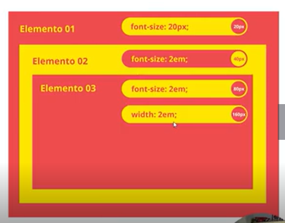
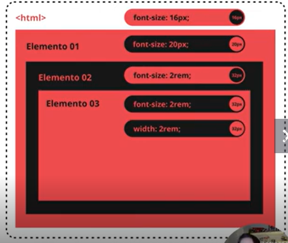

Utilizados para o font-size acompanhar mudanças
Unidade em
em multiplica tamanho definido no elemento pai ex= font-size 20px

Unidade rem
rem multiplica tamanho definido root (elemento raiz) ex= font-size 16px

Vantagens de se usar REM e EM
- Fácil manutenção
- Flexibilidade
- Controle de escala pelos navegadores